ASCENT / STATIC ASSET PRODUCTION / ORIGINAL MODELING
Four static studies.
One native quality standard.
An independently reconstructed anvil, a framed clamping workstation, an adjustable plate mill, and Slagclaw: a new furnace scorpion built from original anatomical geometry.
All game-appearance evidence below comes from the unchanged Rust renderer. Blender images are labeled separately. These are completed review candidates; artistic acceptance remains with the user. No rigs, animation, interactions or gameplay were developed for this experiment.
The workshop · actual Rust renders
The workstation occupies the front service position, the plate mill sits near the masonry entrance, and Slagclaw approaches over ash and scoria. The original arch, walls and barrels are retained supporting scenery from the preserved Sol work. The four benchmark models are newly authored; no completed Astra benchmark mesh or Cindermaw geometry was imported.
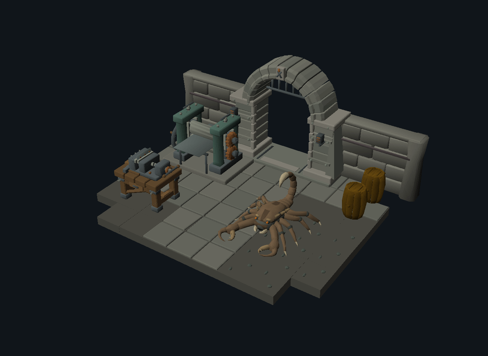
Native whole-scene overview · 1300 × 950 · ambient 64 / contrast 768, light [-30, -50, -30]A · Independently modeled OSRS anvil
Revision 239.1 object 2097, model 1251, is used privately as the authentic reference. The authored reconstruction uses new lofts, head and heel geometry, and a deliberately blunt lifted horn. No cache vertex array, topology, Blender round trip or previous completed anvil mesh is an input to the authoring script.
The first pass had an overly pointed horn and box-like waist. The selected result improves the foot-to-waist transition, top bevel, heel connector and horn profile. Native scale, light and reference cameras are held constant.
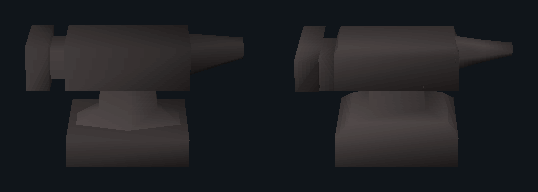
Reference left / independently authored right · front · identical crop and native camera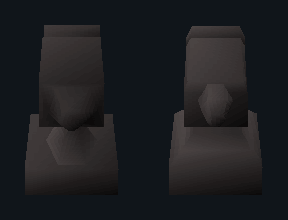
Reference left / independently authored right · side · identical crop and native camera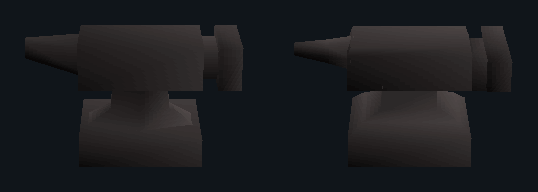
Reference left / independently authored right · rear · identical crop and native camera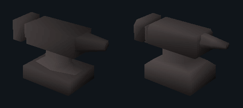
Reference left / independently authored right · quarter · identical crop and native camera50% overlays and full-size matched renders
Measured silhouette overlap improves from 90.3% to 93.5% in front, 92.8% to 97.9% from the side, and 91.1% to 93.9% at three-quarter. These describe silhouette only. Smooth-normal gradients, waist facets and small bevel transitions still differ; the images are the primary evidence.
Initial independent pass · same reference camera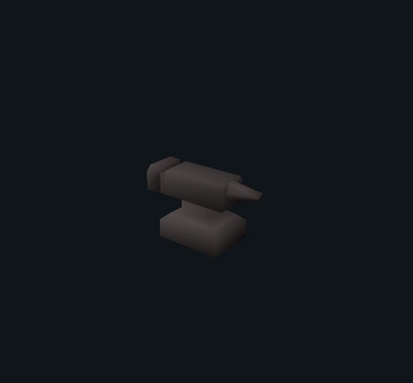
Selected reconstruction · same reference camera 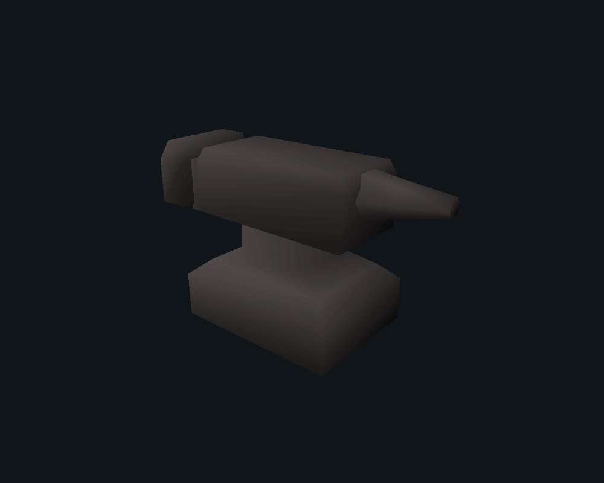
Close native authored anvil · separate inspection cameraB · Framed plate-clamping workstation
A fixed jaw and screw-driven moving jaw clamp a narrow metal plate. The vise bed is anchored to a framed bench with diagonal braces, lower crossrails, a stretcher, iron feet, tool tray, punches, rivet hammer and a storage drawer. It is a coherent workholding station, rather than an anvil on a platform.
Refinement makes the bench load path explicit, adds the clamped workpiece, develops the screw and thrust collar, and joins the lower frame to all four legs.
Native front, side, rear and gameplay views
Blender presentation and camera-matched comparison
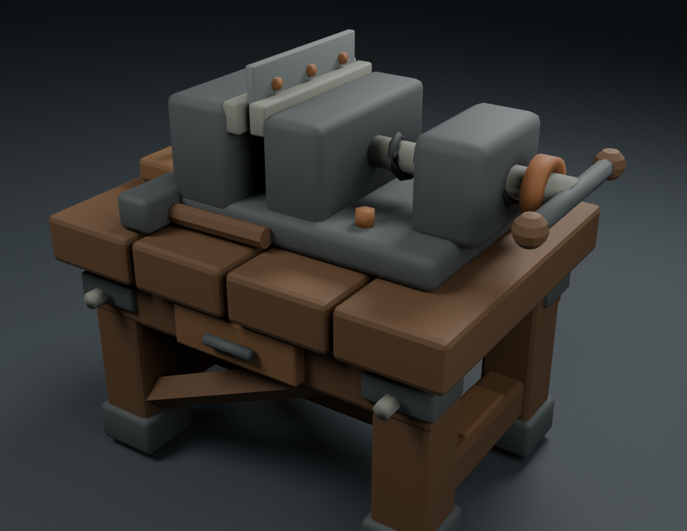
BLENDER CYCLES · studio presentationNATIVE RUST · fixed quarter view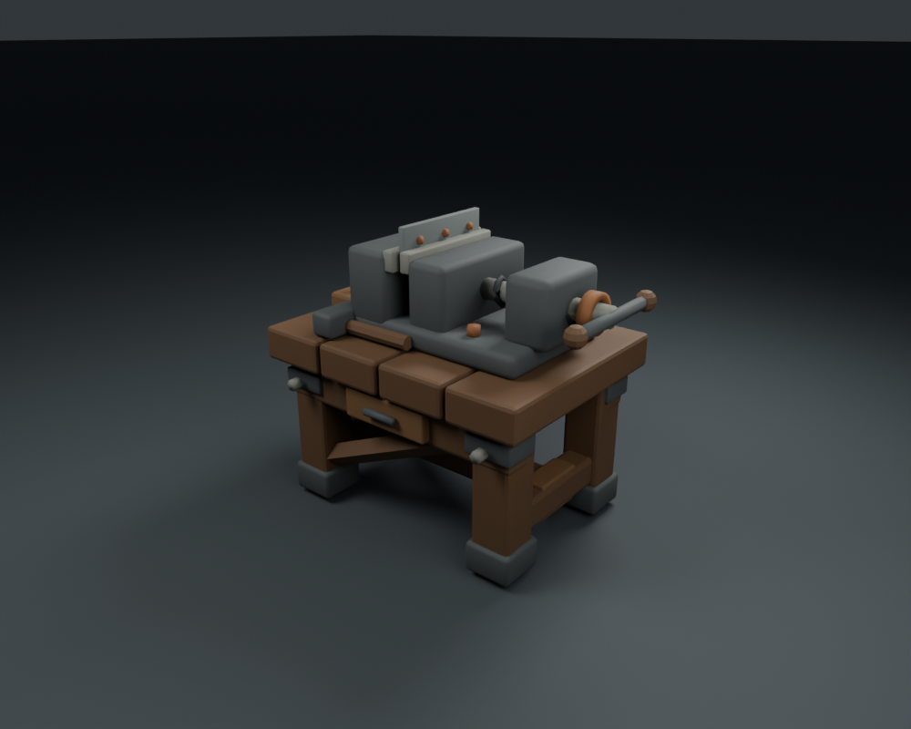
BLENDER CYCLES · equivalent projection and source scale C · Adjustable two-roll plate mill
Two polished rolls define a real feed gap. The upper journals sit between guide strips and are adjusted by vertical spindles. A lower handwheel drives a phased gear pair. Feed supports, bearing blocks, oilers, locknuts and frame bolts explain its assembly.
Refinement adds the coupled gears, adjusts their phase, supports the entering sheet and makes the upper journal guidance legible. This is a static mechanical design study, not a claim of engineering certification.
Native front, side, rear and gameplay views
Blender presentation and camera-matched comparison
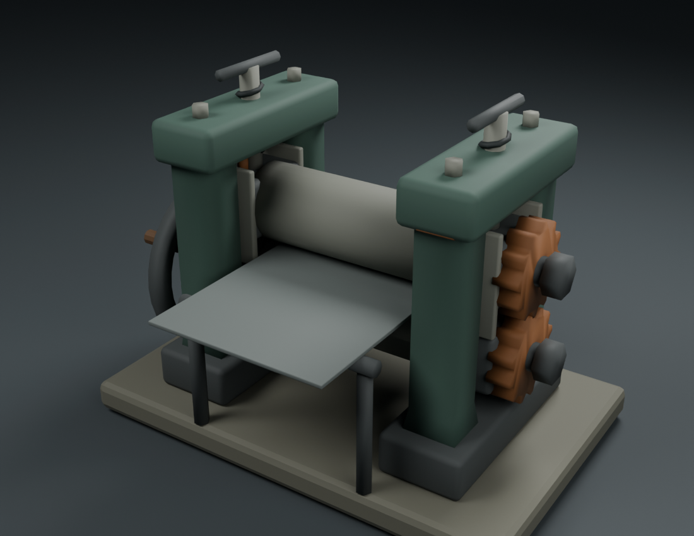
BLENDER CYCLES · studio presentationNATIVE RUST · fixed quarter view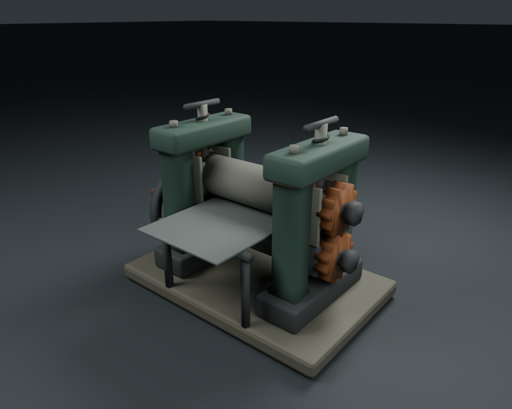
BLENDER CYCLES · equivalent projection and source scale D · Slagclaw, furnace scorpion
An original eight-legged arthropod with a continuous cephalothorax, paired eyes and orbital brows, a frontal mouth shield, mandibles, asymmetric pincers, chitin limbs, individual tarsal claws and a segmented curved tail. The silhouette and anatomy are independent of Cindermaw.
The first added ribs overlapped the shell poorly in native rendering. Refinement removes those floating strips, sculpts the shell itself, assigns a broad median seam and lateral rim, adds defensive spines, and fills the tail intersegment gaps with flexible membranes.
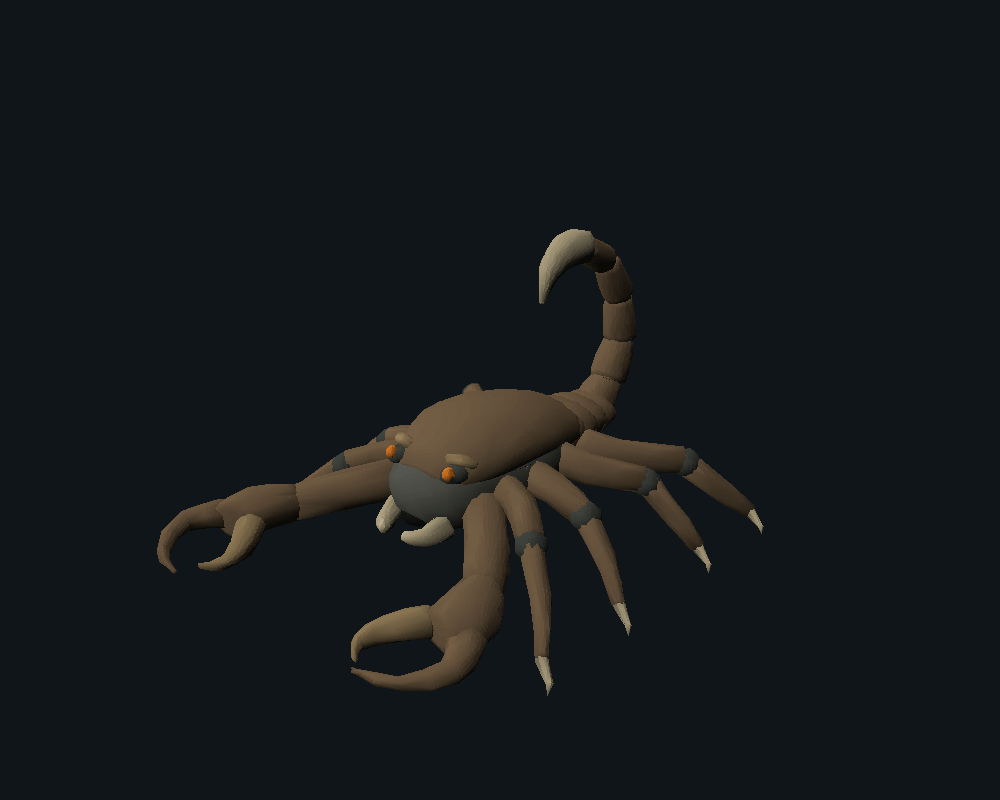
Initial structured pass · fixed native cameraSelected refined model · same cameraNative front, side, rear and gameplay views
Blender presentation and camera-matched comparison
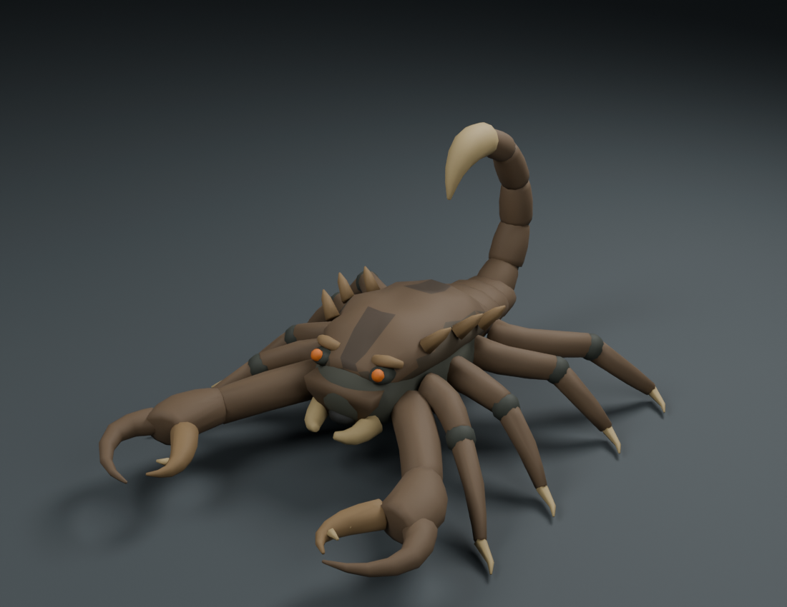
BLENDER CYCLES · studio presentationNATIVE RUST · fixed quarter view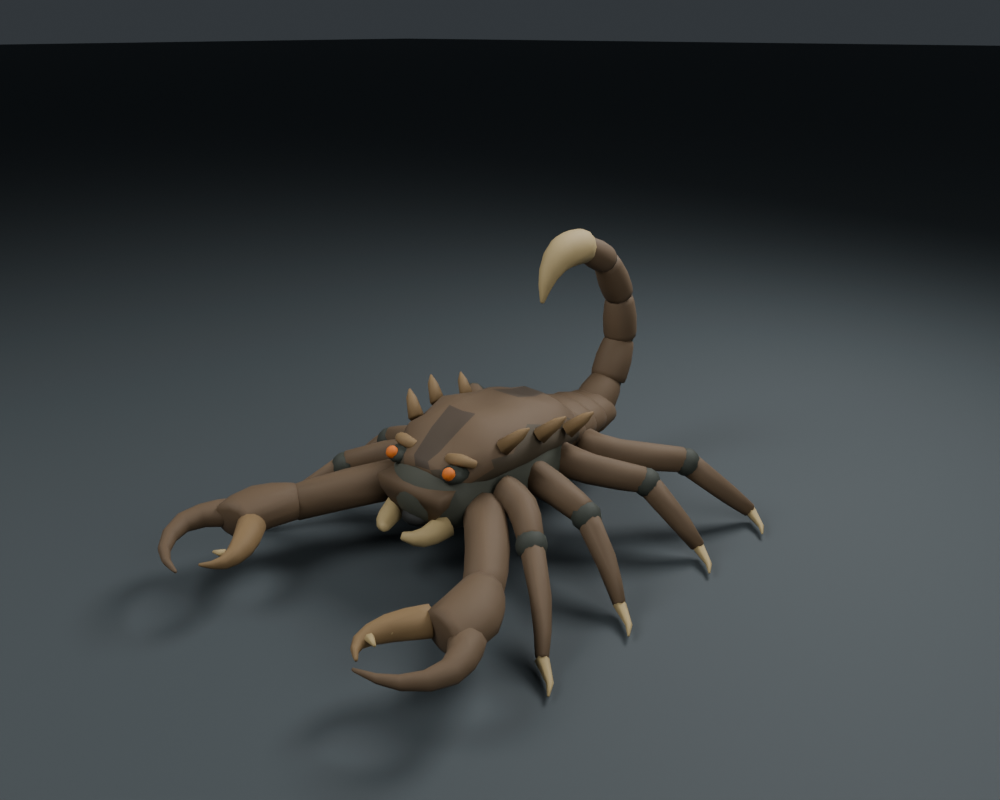
BLENDER CYCLES · equivalent projection and source scale Creature surface and silhouette diagnostics
Orthographic creature reference views
Blender workshop presentation
Cycles uses the confirmed GTX 1660 Ti CUDA device. Three area lights, a neutral background and soft contact shadows support review. These physical lighting effects are not substituted for native appearance.
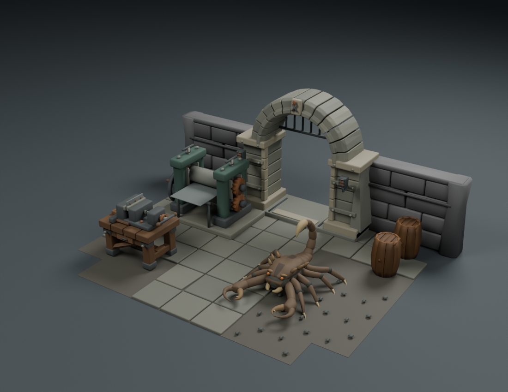
BLENDER CYCLES · original static workshop sceneWhat improved the work
| Method | Visible contribution |
|---|
| Supported surface cages and controlled fusion | A continuous creature head/thorax with deliberately tapered limbs, curved claws and connected tail sections. |
| Purposeful industrial components | The workstation’s jaws, screw and bracing and the mill’s bearings, guide strips, feed gap and gear relationship explain their function. |
| Asset-side relief and material regions | Carapace features live in its own surface instead of competing overlapping strips; broad regions survive native shading more cleanly. |
| Fixed native review | Exposed the pointed anvil horn, weak initial bench construction, unphased gears, overlapping ribs and tail gaps. |
| Equivalent Blender/native projection | Allows geometry and source shading to be inspected without confusing studio light with a game-render improvement. |
| Selected model | Vertices | Triangles | Collapsed micro-triangles |
|---|
| Anvil | 70 | 120 | 0 |
| Workstation | 2,456 | 4,576 | 112 |
| Machine | 2,304 | 4,155 | 229 |
| Creature | 5,173 | 9,788 | 222 |
Native export evaluates the editable delivery modifiers, rounds an export copy to the integer lattice, removes collapsed triangles and encodes through the preserved codec. Maximum rounding is 0.5 native units per axis, with 128 units per tile. The dense first creature exceeded a codec section limit; controlled simplification reduced delivery density while retaining the silhouette. Model counts are constraints and diagnostics, not quality scores.
Broad face-color regions and native interpolated shading are the selected material strategy. The source retains UVs, but arbitrary PBR roughness, normal maps and shader networks are not claimed to survive the converter. The renderer, cache identifiers and live map remain unchanged.
Remaining limitations: the anvil’s smooth shading is not exact; small screw threads, rivet details and thin creature tips soften after quantization; Slagclaw’s shell still has broad quiet areas and its facets remain visible at close scale. The mill and workstation have understandable mechanisms, but no load or manufacturing analysis has been performed. Final artistic approval remains with the user.
Reusable workflow and commands · Model, material and source manifests · File identities